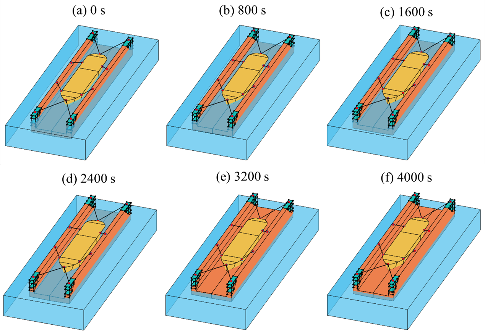

An efficient quasi-static model for simulating floating dock operations

Abstract
Floating docks play a critical role in the maintenance and servicing of vessels, particularly in scenarios where graving dock capacity is limited. With the increasing intensity of maintenance activities driven by the growth of the shipbuilding industry, ensuring the structural safety of floating docks has become increasingly challenging. To enhance the operational safety of the floating docks, this study presents a quasi-static numerical model for simulating the dynamic behaviour of floating docks during docking and undocking operations, focusing on both one-vessel and two-vessel configurations. The model treats both the floating dock and the docked vessels as six-degree-of-freedom rigid bodies and incorporates hydrostatic force, hydrodynamic force, mooring rope tensions, mooring line force, and contact interactions between the dock and vessels. An automatic ballast control system based on a proportional controller is used to dynamically adjust valve openings to control ballast water levels and minimize roll and pitch angles. The quasi-static framework is designed for long-duration operations of the floating dock subject to negligible wind, wave and current loads. The results confirm that the proposed quasi-static model effectively evaluates floating dock behaviour during docking and undocking for both single- and two-vessel configurations. The model accurately captures the load transitions among vessel weight, buoyancy, and docking block support throughout these operations. These findings demonstrate the model's potential for simulating floating dock operations across various vessel configurations, providing practical insights to enhance the safety and efficiency of such systems.
Read the published article ↗Abstract reproduced unchanged from Wen, Nordås & Ong (2026), Ocean Engineering, under CC BY 4.0.